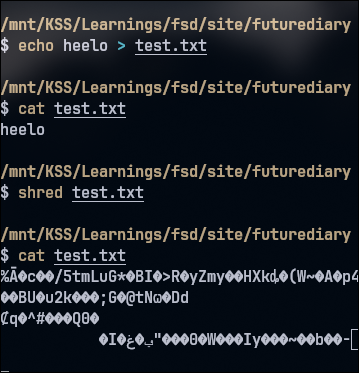
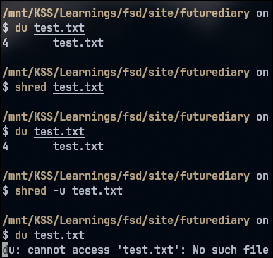

Just this much part from Mr.Robot is also so epic.
The shred command is used to overwrite the contents of a file.

use -u to delete the entry of the file [ truncate the file size to 0 ].

It defaults to 3 overwriting , but if you don't believe it and want manual control use
-n <number> to specify the number of times you want to overwrite that part of the disk with zeroes.
This is amazing sauce for life .
Kevin Mitnick is a true inspiration for me.
I think this is the point where i go -
At this point I put everything that I learned till date ,
behind me.
And DO this , that I LOVE for the rest of my life.